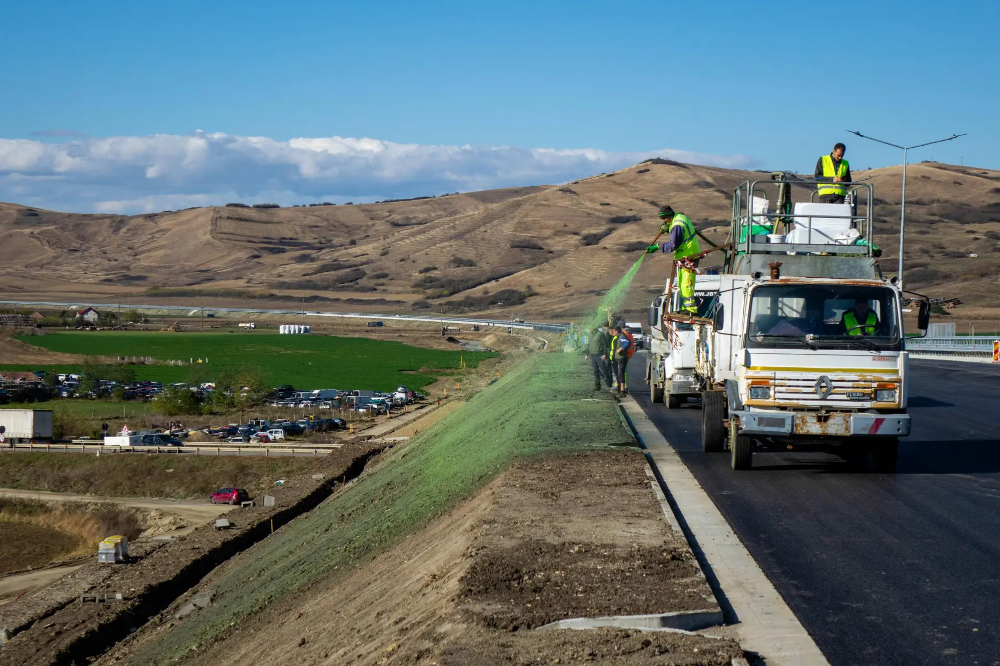
Utah land reclamation contractor
Hydroseeding, BARS Silver drone seeding, mulching and erosion control for mines, energy, construction and public land. Family-run in Fairview since 1995.
Reclamation services for disturbed ground
We pick the method for each area by its slope, its access and the safety rules of the site.
- Drone seeding and herbicide
Steep, unstable or remote ground, no crew on the slope.
BARS Silver - Hydroseeding
FINN T330s on trucks and track carriers, area by area.
Truck or track - Mechanical mulching
FECON Bull Hog fuel breaks and timber thinning.
Fuel breaks - Herbicide and weed control
Soil sterilant at facilities, noxious weeds on corridors.
Licensed - Erosion control and SWPPP
Silt fence and stormwater BMPs, then final seeding.
Active sites
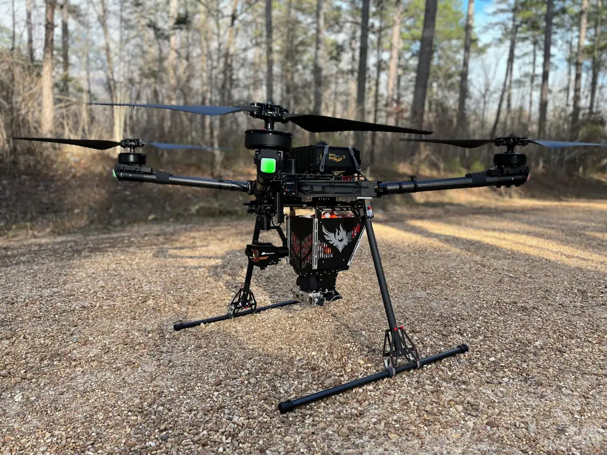
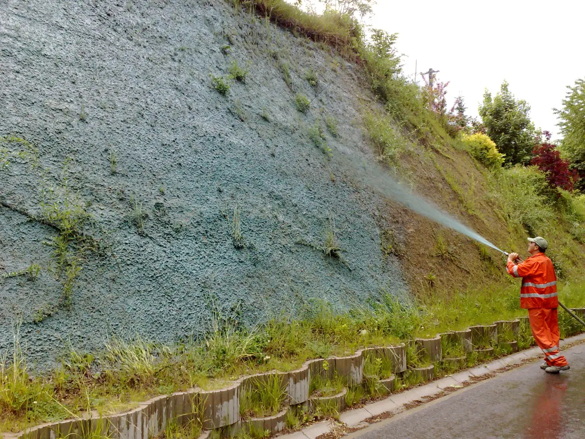
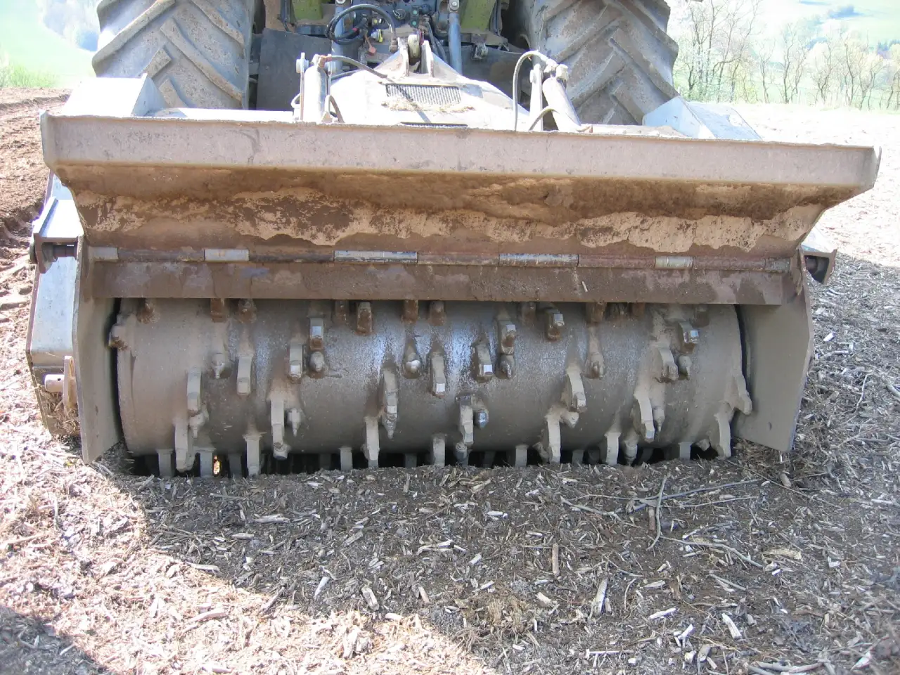
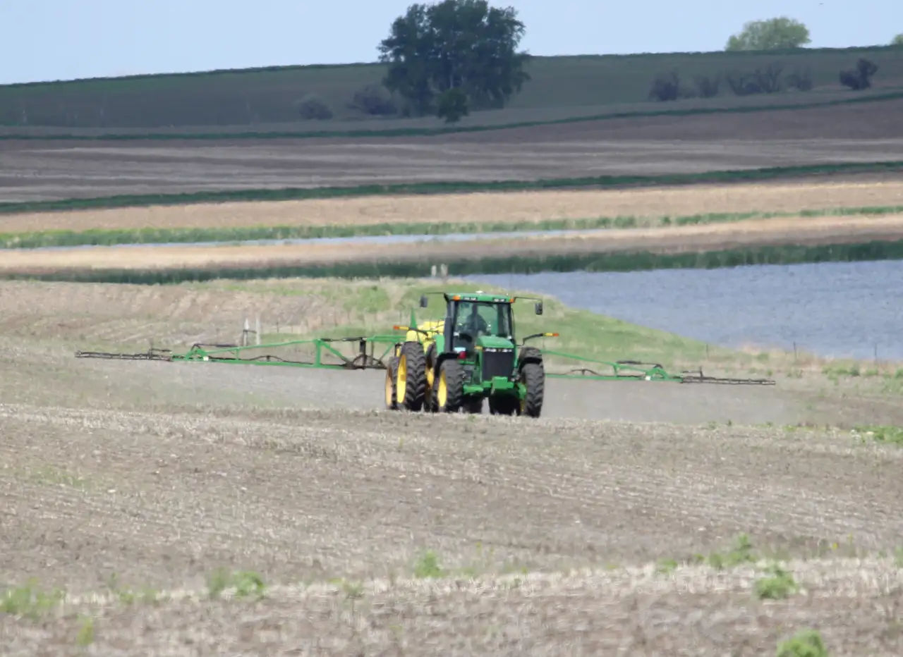
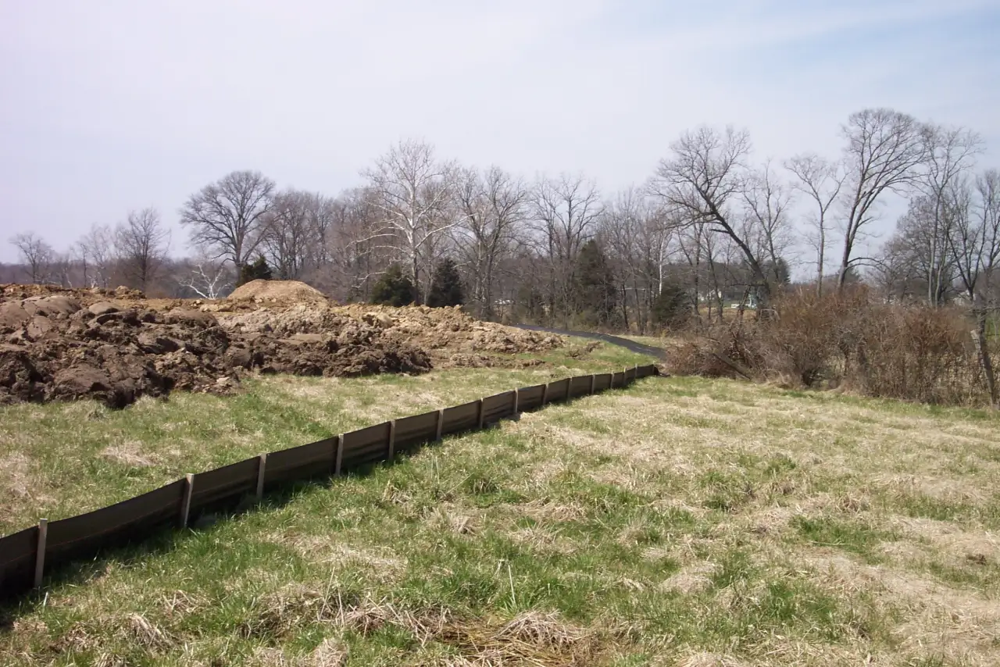
Three jobs where the ground was the hard part
The seed is rarely the problem. The slope, the safety rules or the elevation usually is.
-
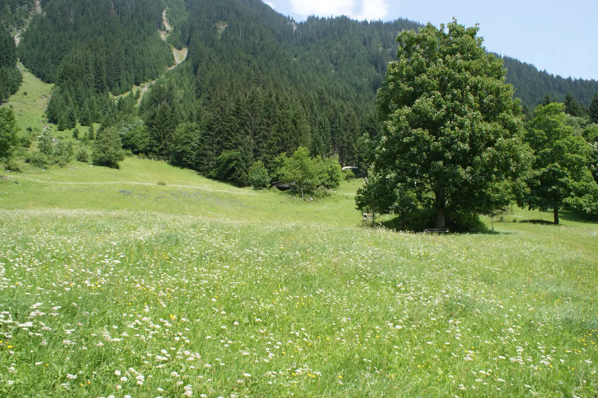
Mayflower Mountain Resort: ski-run slopes
Runs too steep and rough for standard rigs. Our track-mounted hydroseeding and mulching equipment worked directly on the slopes.
-
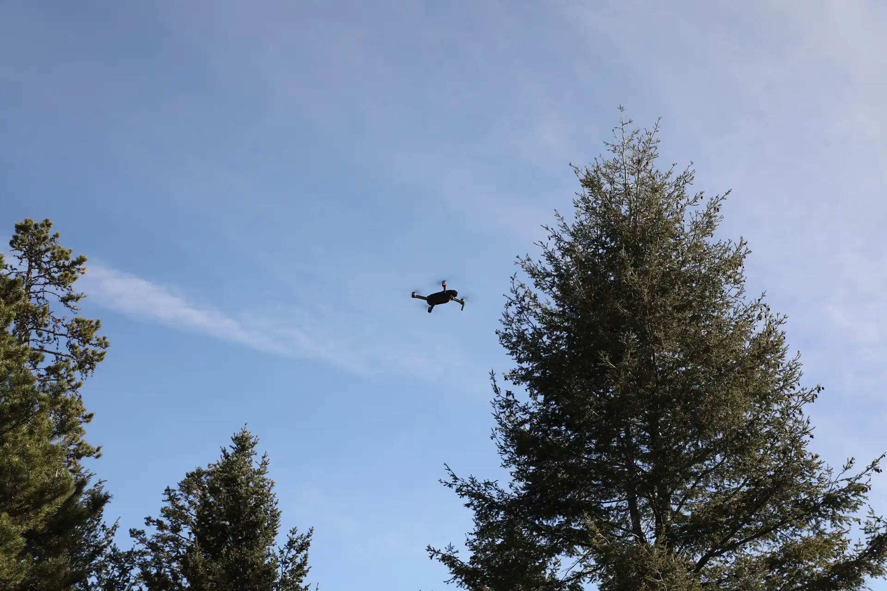
Rio Tinto Kennecott: cleared to fly
An active mine that vets every aircraft operator it hires. We fly BARS Silver drone seeding there, and they bring us back each year.
-
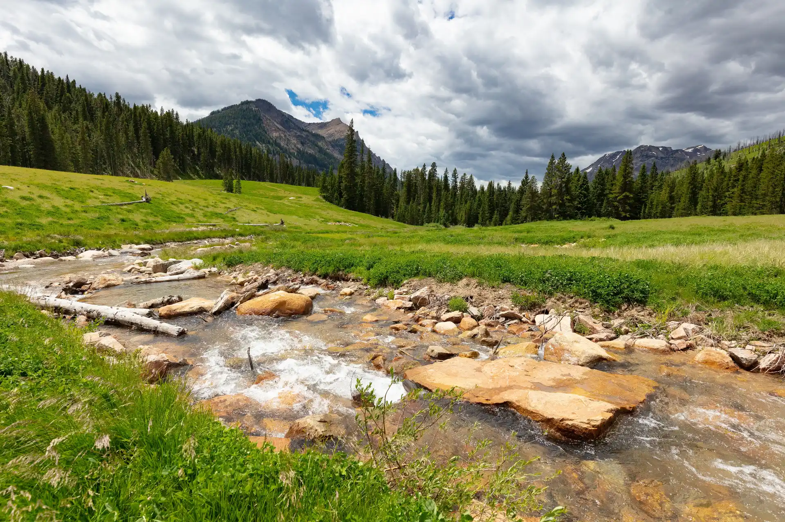
High country: work above 9,000 feet
Remote ground with no practical road in. We seeded and mulched it from the air.
Built for the sites other contractors pass on
- 30 years of reclamation work
Family-run from Fairview, in Sanpete County.
1995 - BARS Silver drone operations
Independently audited aviation safety.
Audited - Track-mounted equipment
Reaches steep, soft and remote ground that trucks cannot.
Owned fleet - Proven at high elevation
Seeding and mulching in remote terrain.
9,000+ ft
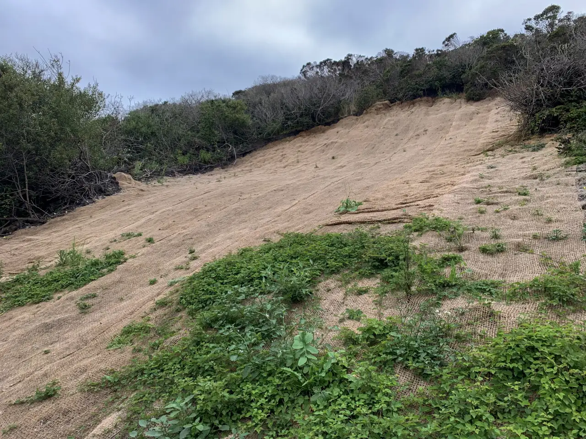
Clients and agencies across Utah
Mining, energy and construction companies, and the state and federal agencies that sign off on reclamation.
Clients


Agencies
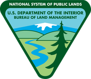
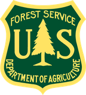
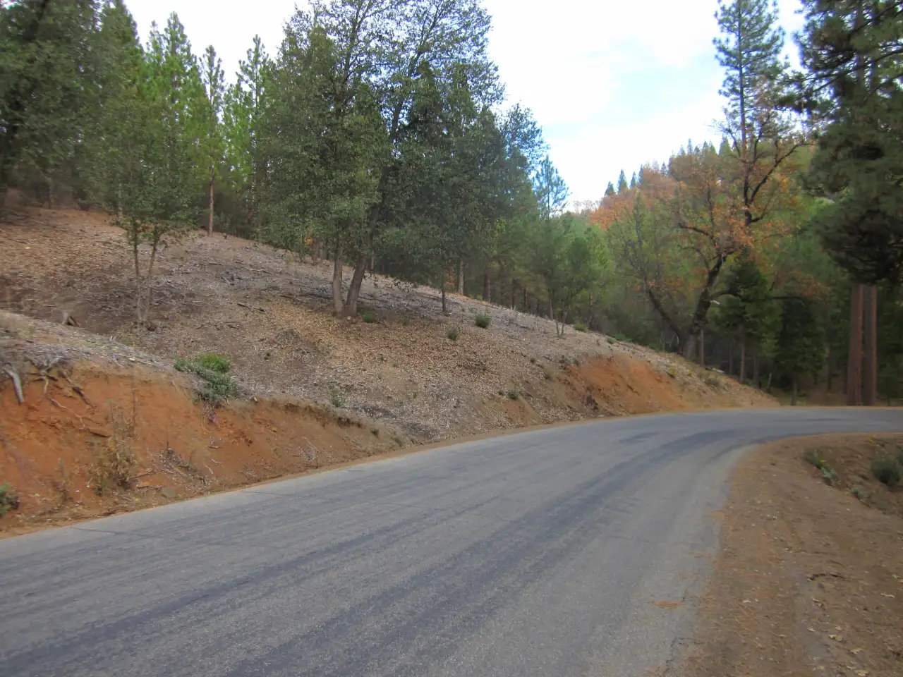